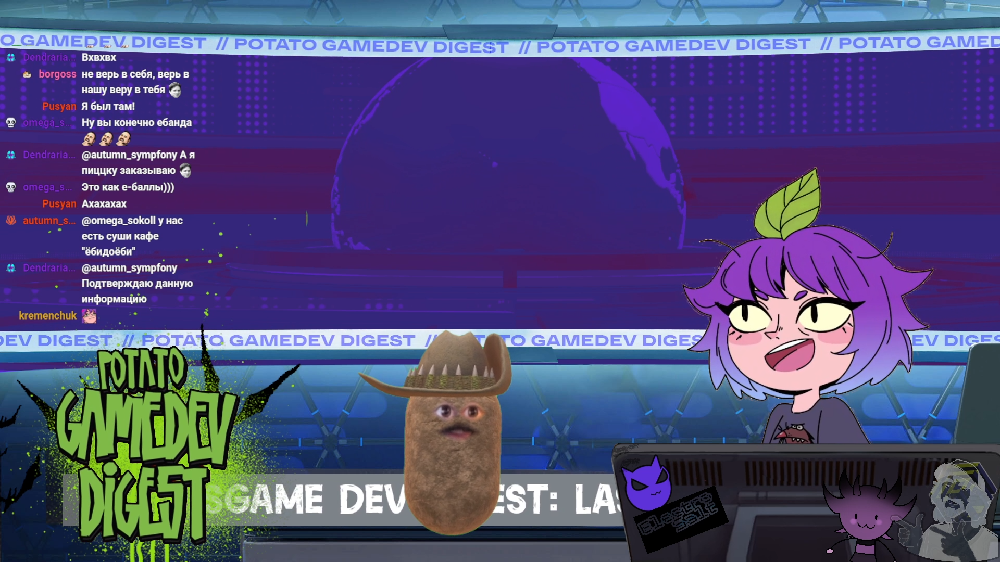

Представление
Ведущий знакомит аудиторию с гостем, его профилем, проектами, достижениями и регалиями.
Свежие релизы, интересные игровые проекты, разработчики, стримеры и разговоры о том, что происходит в игровой индустрии.

 №1
№1Смотреть выпуск на YouTube ↗
 №2
№2Смотреть выпуск на YouTube ↗
 №3
№3Смотреть выпуск на YouTube ↗
 №4
№4Смотреть выпуск на YouTube ↗
 №5
№5Смотреть выпуск на YouTube ↗
 №6
№6Смотреть выпуск на YouTube ↗
 №7
№7Смотреть выпуск на YouTube ↗
 №8
№8Смотреть выпуск на YouTube ↗
 №9
№9Смотреть выпуск на YouTube ↗
 №10
№10Смотреть выпуск на YouTube ↗
 №11
№11Смотреть выпуск на YouTube ↗
 №12
№12Смотреть выпуск на YouTube ↗
Карточки листаются горизонтально. Нажми на превью — откроется соответствующий выпуск на YouTube.
Potato GameDev Digest — ежемесячный дайджест новостей и новинок из мира видеоигр.
Выпуск выходит в формате стрима на Twitch, а затем публикуется как видео на YouTube и VK и как аудио на Spotify, Apple Podcasts и Яндекс.Музыке.
Геймеры и игровые энтузиасты 18–35 лет, активно следящие за новинками и трендами индустрии.
Стримеры, VTubers, авторы и другие люди из игровой тусовки.
Ведущий знакомит аудиторию с гостем, его профилем, проектами, достижениями и регалиями.
Ссылки на Twitch, YouTube, соцсети, проекты и другие ресурсы гостя всегда размещаются в описании.
Участие создаёт дополнительный публичный материал и помогает увеличивать узнаваемость гостя в интернете.
Можно рассказать о релизе, проекте, событии, анонсе или другой важной новости.
Обсуждаем игры, индустрию и личный опыт — без ощущения сухого интервью.
Новые контакты, идеи, коллаборации и обмен опытом с людьми из игровой тусовки.
Открыт к предложениям и сотрудничеству. Интегрируем бренд в контент естественно и с учётом формата выпуска.
Логотип, бренд или рекламный визуал можно разместить прямо на ноутбуке гостя — он будет заметен зрителям во время выпуска.
Естественное упоминание новости об игре, девайсе или сервисе прямо в обсуждении выпуска.
Короткий рекламный блок в начале, середине или конце выпуска — под задачу бренда.
Отдельная рубрика или спонсорский выпуск, посвящённый вашему продукту, игре или событию.
Розыгрыши, интеграции в соцсетях, упоминания в анонсах и шортах — открыт к идеям.
Гости, игры, новости, бренды и хорошие разговоры.